File: 000360.gt.txt (if the image is defective, simply delete all Arabic text and the line will be excluded)
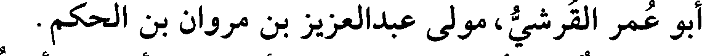
أبو عمر القرشي، مولى عبدالعزيز بن مروان بن الحكم.
File: 000361.gt.txt (if the image is defective, simply delete all Arabic text and the line will be excluded)
شيخ مسند، دمشقي. سمع أحمد بن أنس، وأبا قصي العذري،
File: 000362.gt.txt (if the image is defective, simply delete all Arabic text and the line will be excluded)
والحسين بن محمد بن جمعة، وحاجب بن أركين، وعبدالرحمن بن القاسم
File: 000363.gt.txt (if the image is defective, simply delete all Arabic text and the line will be excluded)
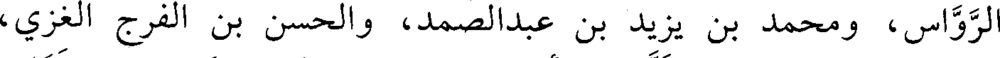
الرواس، ومحمد بن يزيد بن عبد الصمد، والحسن بن الفرج الغزي،
File: 000364.gt.txt (if the image is defective, simply delete all Arabic text and the line will be excluded)
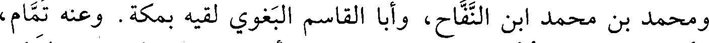
ومحمد بن محمد ابن النفاخ، وأبا القاسم البغوي لقيه بمكة. وعنه تمام،
File: 000365.gt.txt (if the image is defective, simply delete all Arabic text and the line will be excluded)
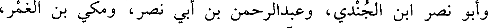
وأبو نصر ابن الجندي، وعبدالرحمن بن أبي نصر، ومكي بن الغمر،
File: 000366.gt.txt (if the image is defective, simply delete all Arabic text and the line will be excluded)
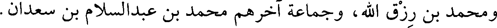
ومحمد بن رزق الله، وجماعة آخرهم محمد بن عبد السلام بن سعدان.
File: 000367.gt.txt (if the image is defective, simply delete all Arabic text and the line will be excluded)
توفي في آخرها.
File: 000368.gt.txt (if the image is defective, simply delete all Arabic text and the line will be excluded)
10 - عبيدالله بن أحمد بن الحسين، القاضي أبو عمر ابن
File: 000369.gt.txt (if the image is defective, simply delete all Arabic text and the line will be excluded)
السمسار الفقيه الداوودي الظاهري، تلميذ أبي بكر محمد بن داود
File: 000370.gt.txt (if the image is defective, simply delete all Arabic text and the line will be excluded)
الظاهري.
File: 000371.gt.txt (if the image is defective, simply delete all Arabic text and the line will be excluded)
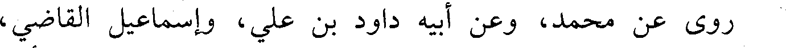
روى عن محمد، وعن أبيه داود بن علي، وإسماعيل القاضي،
File: 000372.gt.txt (if the image is defective, simply delete all Arabic text and the line will be excluded)
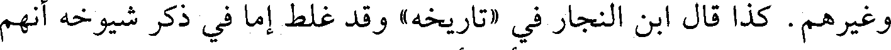
وغيرهم. كذا قال ابن النجار في «تاريخه» وقد غلط إما في ذكر شيوخه أنهم
File: 000373.gt.txt (if the image is defective, simply delete all Arabic text and the line will be excluded)
هؤلاء، وإما في نقل وفاته، والأول أشبه.
File: 000374.gt.txt (if the image is defective, simply delete all Arabic text and the line will be excluded)
قال: روى عنه المحسن بن علي التنوخي في «النشوار» : وعلي بن
File: 000375.gt.txt (if the image is defective, simply delete all Arabic text and the line will be excluded)
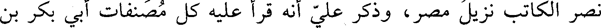
نصر الكاتب نزيل مصر، وذكر علي أنه قرأ عليه كل مصنفات أبي بكر بن
File: 000376.gt.txt (if the image is defective, simply delete all Arabic text and the line will be excluded)
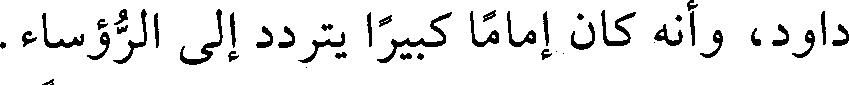
داود، وأنه كان إماما كبيرا يتردد إلى الرؤساء.
File: 000377.gt.txt (if the image is defective, simply delete all Arabic text and the line will be excluded)
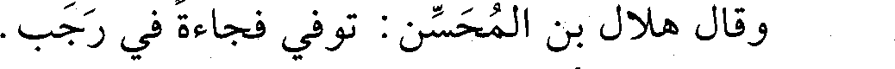
وقال هلال بن المحسن: توفي فجاءة في رجب.
File: 000378.gt.txt (if the image is defective, simply delete all Arabic text and the line will be excluded)
ثم جزمت بأنه لم يلق داود ولا إسماعيل.
File: 000379.gt.txt (if the image is defective, simply delete all Arabic text and the line will be excluded)
11 - عثمان بن عمر بن خفيف، أبو عمرو المقرىء المعروف
File: 000380.gt.txt (if the image is defective, simply delete all Arabic text and the line will be excluded)
بالدراج.
File: 000381.gt.txt (if the image is defective, simply delete all Arabic text and the line will be excluded)
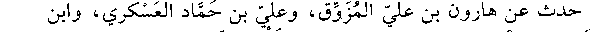
حدث عن هارون بن علي المزوق، وعلي بن حماد العسكري، وابن
File: 000382.gt.txt (if the image is defective, simply delete all Arabic text and the line will be excluded)
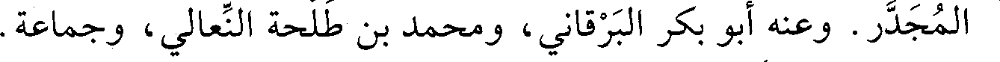
المجدر. وعنه أبو بكر البرقاني، ومحمد بن طلحة النعالي، وجماعة.
File: 000383.gt.txt (if the image is defective, simply delete all Arabic text and the line will be excluded)
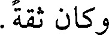
وكان ثقة.
File: 000384.gt.txt (if the image is defective, simply delete all Arabic text and the line will be excluded)
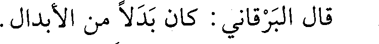
قال البرقاني: كان بدلا من الأبدال.
File: 000385.gt.txt (if the image is defective, simply delete all Arabic text and the line will be excluded)
وقال غيره: مات فجاءة في رمضان، رحمة الله عليه (1) .
File: 000386.gt.txt (if the image is defective, simply delete all Arabic text and the line will be excluded)
12 - عثمان بن محمد بن إبراهيم المادرائي، أبو عمرو، نزيل
File: 000387.gt.txt (if the image is defective, simply delete all Arabic text and the line will be excluded)
مصر.
File: 000388.gt.txt (if the image is defective, simply delete all Arabic text and the line will be excluded)
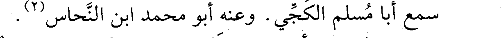
سمع أبا مسلم الكجي. وعنه أبو محمد ابن النحاس (2) .
File: 000389.gt.txt (if the image is defective, simply delete all Arabic text and the line will be excluded)
13 - علي بن أحمد بن فروخ البغدادي الواعظ، ويعرف بغلام.
To Save: `Ctrl+s`, make sure to choose `Webpage, complete`!